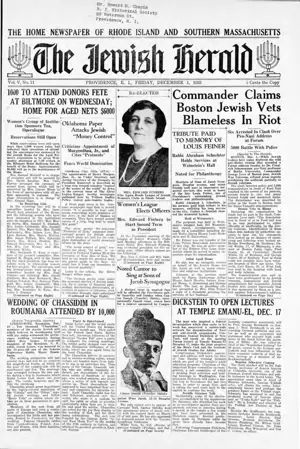

השידוך נקבע לפי הדיווח כשאבי הכלה ביקר ברומניה. כעבור כשנה הגיעה בתו מברוקלין, ובעיר נערכו לימי שמחה שכללו סעודות גם למי שלא הוזמנו מכוח קשר משפחתי.
נדבורנא · 1933
נדבורנא | חתונה חסידית בצ׳רנוביץ עם כלה מברוקלין

לכתבה המלאה
20 ₪
נדבורנא · 1933
השידוך נקבע לפי הדיווח כשאבי הכלה ביקר ברומניה. כעבור כשנה הגיעה בתו מברוקלין, ובעיר נערכו לימי שמחה שכללו סעודות גם למי שלא הוזמנו מכוח קשר משפחתי.

20 ₪